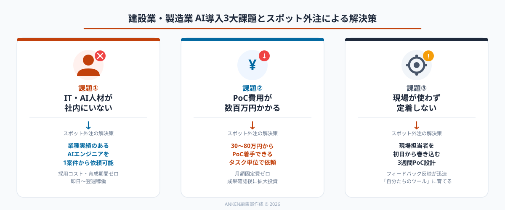
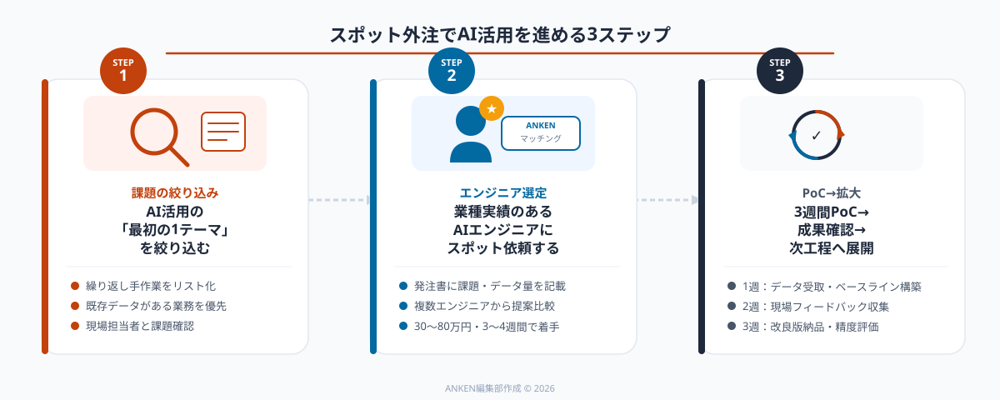

建設業・製造業にAI活用の余地が大きい理由
建設業・製造業は、日本のGDPの約2割を占める基幹産業でありながら、デジタル化の遅れが最も顕著な業種の一つです。2026年現在、IT産業に比べて5〜10年の遅れがあると言われており、裏を返せば「AIを入れるだけで劇的に改善できる業務」が豊富に残っています。
具体的には、以下のような業務でAI活用の効果が大きいと報告されています。
【建設業でAIが有効な業務】建設現場の安全管理（作業員の不安全行動を映像AIで検知）、図面からの数量拾い出し（AI-OCRによる自動計算）、工程進捗の管理と遅延予測（過去データを学習した予測モデル）、施工不良の画像検知（外観検査の自動化）。
【製造業でAIが有効な業務】外観検査の自動化（不良品の画像認識）、設備の予知保全（センサーデータによる故障予測）、生産計画の最適化（需要予測×リードタイム管理）、作業標準書のデジタル化とナレッジ検索（RAGシステム）。
これらの課題に共通しているのは、「現場に大量のデータが眠っているが、それを活かすIT人材がいない」という構造的問題です。営業・管理部門はERP・SFAなどITツールに触れてきましたが、製造・建設の現場はいまだにエクセルと紙が主体という企業が多数を占めます。

「社内IT人材がいない」問題をスポット外注が解決する仕組み
建設業・製造業のDX担当者がAI導入を検討する際、最初にぶつかる壁が「誰が作るのか・誰が管理するのか」という人材問題です。大手SIerやコンサルに依頼すると、PoC（実証実験）だけで数百万円かかるケースも珍しくなく、「費用対効果が見えないうちに大きな投資はできない」という判断が続きます。
スポット外注が有効な理由は主に3つあります。
①「試作→検証」を低コストで回せる：最初から完成品を求めるのではなく、「まず1現場・1工程に特化したプロトタイプを1〜2週間で作ってもらう」というアプローチが可能になります。予算は30〜80万円程度から始められるため、「効果がなければ止める」という意思決定がしやすくなります。
②製造・建設の業務知識を持つAIエンジニアを選べる：スポット外注プラットフォームには、工場向けの画像認識システムや建設現場の安全管理AIの開発実績を持つエンジニアが登録しています。総合的なIT会社に依頼するより、ドメイン知識のあるエンジニアが直接担当するため、「現場の実情を理解していない」という齟齬が起きにくくなります。
③成功した後に内製化・継続契約に移行できる：スポット外注で作ったシステムの設計書・コードはすべて発注者に帰属します。「最初はスポットで作ってもらい、うまくいったら社員に引き継ぐ」または「メンテナンスだけ継続依頼する」という柔軟な運用が可能です。
全社展開・基幹システムとの完全統合・ベンダーサポートの保証が必要な場合は大手SIerが適しています。一方、「まず1工程・1現場で試したい」「PoC段階のAIツールを低コストで作りたい」「既存システムの横に小さなAI機能を付け加えたい」という用途にはスポット外注が圧倒的にコスパが高くなります。
スポット外注でAI活用を進める3ステップ

STEP 1：AI活用の「最初の1テーマ」を現場から絞り込む
最も重要かつ多くの企業が失敗するのがこのステップです。「うちの工場全体をDXしたい」「建設業全般でAIを使いたい」という方向性では、スコープが広すぎて依頼書を書くことすらできません。
絞り込みの基準は2つです。①「繰り返し発生している手作業」——月に10回以上・毎日・毎シフトごとに同じ作業が発生しているもの（点検記録の転記、検査結果の集計、日報の入力 等）。②「データがすでに存在している」——写真・センサーログ・エクセル台帳など、AIが学習に使えるデータが一定量ある業務。
この2つを満たす業務を1〜2件リストアップし、「まず最も件数の多いもの1件から着手する」と決めることが、プロジェクトを前進させる最大のコツです。
STEP 2：「この業種・この課題」に知見のあるAIエンジニアを選んで依頼する
テーマが決まったら、発注書（依頼内容のドキュメント）を作成してAIエンジニアを探します。発注書には以下の情報を盛り込みます。
①解決したい業務課題（例：溶接後の外観検査に1人あたり30分かかっており、見落としが月平均3件発生している）。②現在使っているデータの種類と量（例：スマートフォンで撮影した不良品・良品画像が約500枚ある）。③期待するアウトプット（例：タブレット上で写真を撮ると5秒以内に合否判定が出るアプリ）。④予算感・期間（例：50万円以内・3週間のPoC）。
これらをドキュメント化して複数のエンジニアにシェアし、「この分野の経験はありますか？」という形で提案を比較します。製造業・建設業向けのAI開発経験を持つエンジニアは、ポートフォリオや過去の案件概要から見分けることができます。ANKENでは業種・業務課題を指定してエンジニアを絞り込める機能を提供しています。
STEP 3：3週間の「小さなPoCサイクル」を回して成果を確認する
理想的なスポット外注の進め方は、3週間のPoCサイクルを1単位とすることです。
1週目：エンジニアが要件をヒアリングし、データを受け取り、AIモデルのベースラインを構築。2週目：プロトタイプを現場担当者に試してもらい、フィードバックを収集。3週目：フィードバックを反映した改良版を納品、精度・使い勝手を評価。
このサイクルで「使える」と判断できた場合は、同エンジニアに継続依頼するか、別の工程への展開を別のスポット依頼として発注します。「思ったより精度が出ない」という場合も、PoCの失敗コストは最小限で済み、「このデータではAIが機能しない」という事実を安く早く学べたという成果として捉えられます。
活用事例：建設業・製造業でのAI導入ケース3選
事例1：建設現場の安全パトロール自動化（建設業・従業員150名）
毎日の安全パトロールで現場責任者が写真撮影→帳票記入→事務所でデータ入力という3ステップを踏んでいた。この工程をスポット外注で開発した「現場写真×チェックリスト自動照合アプリ」に置き換え、写真を撮るだけでAIが安全確認項目を自動チェック・記録するシステムを3週間・40万円で構築。現場担当者の日報作成時間が1日30分→5分に短縮されました。
事例2：部品外観検査の精度向上（製造業・従業員80名）
プレス部品の外観検査を目視で行っており、熟練検査員の退職に備えたナレッジ移転が課題でした。スポット外注で画像認識AIを開発し、タブレットのカメラで撮影するだけで良品・不良品の判定と「不良箇所のハイライト表示」が可能なシステムを構築（予算70万円・5週間）。新入社員でも熟練者と同等の検査精度を実現し、見落とし率が80%減少しました。
事例3：作業標準書検索AIの導入（製造業・拠点8カ所）
製品ごとの作業標準書がPDFとエクセルで数百件存在し、作業員が必要な手順を探すのに平均10分かかっていました。RAG（検索拡張生成）技術を使ったナレッジ検索ツールをスポット外注で構築。「このビスの締め付けトルクは？」「この機械の保全手順は？」と自然言語で質問すると、該当箇所を抜き出して答えてくれるシステムを65万円・4週間で実現しました。
PoC段階（単一機能・単一現場）：30〜80万円 / 2〜4週間。本番化・複数拠点展開：100〜300万円 / 1〜3カ月。メンテナンス・機能追加：10〜30万円 / スポット依頼。月額固定のシステム運用契約と比較すると、最初の3カ月間は70〜80%のコスト削減になるケースが多く報告されています。
スポット外注でAI導入を失敗させないポイント
①現場担当者をプロジェクトの初日から巻き込む：AI導入が失敗する最大の原因は「現場が使ってくれない」ことです。ITや経営企画がトップダウンで進めると、現場担当者が「使い勝手が悪い」「自分たちの仕事が奪われる」と感じて定着しません。発注前のヒアリング段階から現場の班長・リーダーを参加させ、「自分たちが困っていることを解決してくれるツール」という認識を持ってもらうことが最重要です。
②データの品質と量を先に確認する：「AIを入れたいが、データがない」という状態でスポット外注しても、エンジニアができることには限界があります。少なくとも「解決したい業務に関連する過去データが50件以上ある」「データが整理されたファイル形式で取り出せる」という条件を確認してから発注するのが原則です。データ整備自体をスポット外注の最初のタスクとして依頼するのも有効な進め方です。
③「精度100%」を最初から求めない：AIは「確率的な判断」をするシステムです。画像認識の不良検知であれば「正答率95%」が現実的な初期目標であり、残り5%は人間が最終確認するというハイブリッド運用で開始するのが現場定着の鉄則です。「まず人間の作業を補助するツール」として位置づけ、精度が上がるにつれて人間の確認ステップを減らしていくアプローチが成功率を高めます。
ANKENでは画像認識・予知保全・RAG・現場DXの実績があるAIエンジニアをタスク単位でご紹介します。「まず何から始めればいいか分からない」という段階からご相談いただけます。まずは無料でお気軽にどうぞ。
👉 無料で相談する（現場AIをスポット外注で依頼する）「どんな課題に使えるか」「どんなエンジニアがいるか」から確認できます。
よくある質問
- Q. 建設業・製造業のAI活用は、どのくらいの規模の企業から始められますか？
- A. 従業員30名規模から可能です。1工程・1現場に絞ったPoC（30〜80万円・3〜4週間）から始められます。
- Q. 社内にIT担当者がいなくても依頼できますか？
- A. 依頼可能です。業務課題とデータの種類・量を整理できれば、技術知識がなくてもスポット外注で進められます。
- Q. スポット外注で作ったAIシステムは、後で自社で管理・改修できますか？
- A. コードと設計書は発注者に帰属します。社内引き継ぎ・同エンジニアへの継続依頼・別エンジニアへの引き継ぎ、いずれも選べます。
まとめ
建設業・製造業は、AI導入のポテンシャルが最も大きい業種の一つです。現場に大量のデータが眠っており、繰り返し業務・目視検査・帳票処理といったAIが得意とする課題が豊富に残っています。「IT人材がいない」「予算が限られる」という制約を抱えた中小・中堅企業にとって、スポット外注は月額固定費なしでAI活用を始められる最も現実的なアプローチです。
成功のポイントは3つです。①まず1テーマ・1現場に絞る、②現場担当者を最初から巻き込む、③PoCで成果を確認してから拡大する。この「小さく始めて確実に広げる」サイクルが、建設業・製造業のAI導入を確実に前進させます。